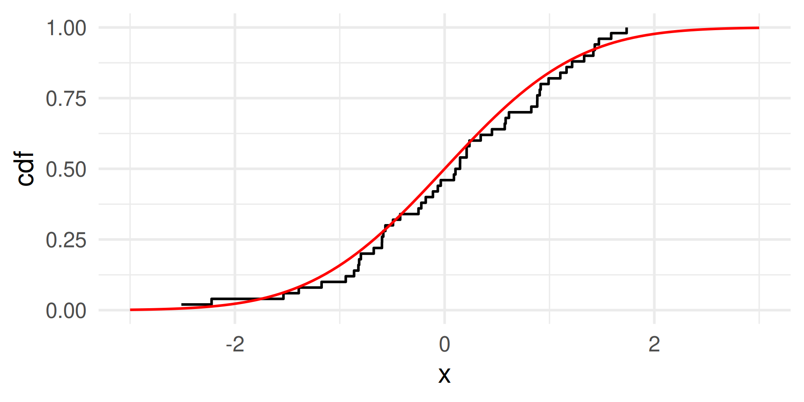
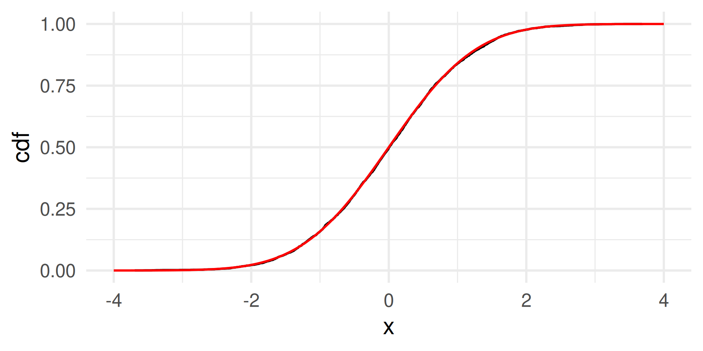

W#12: Hypothesis Testing, Matrices, Probability
xkcd on p-values


- Significance levels are fairly arbitrary. Sometimes they are used (wrongly) as definitive judgments
- They can even be used to do p-hacking: Searching for “significant” effects in observational data
- In parts of science it has become a “gamed” performance metric.
- The p-value says nothing about effect size!
Matrices in Data Science?
- Matrices are the basic data structure for many algorithms in data science. For examples
- Principal Compontent Analysis (PCA)
- Ordinary Least Squares (OLS) regression to estimate coefficients in a linear model
- The mathematical field dealing with matrices is called Linear algebra.
- A linear function \(f: \mathbb{R}^n \to \mathbb{R}^m\) can be represented by an \(m\)-by-\(n\) matrix.

Matrices and Vectors
The elements of an \(m\)-by-\(n\) matrix \(A\)

A matrix can be interpreted
- as \(n\) column vectors of length \(m\) and
\(\downarrow\dots\downarrow\) - as \(m\) row vectors of length \(n\). \(\begin{array}{c}\rightarrow \\[-5mm] \vdots \\[-5mm]\rightarrow\end{array}\)
In R and python, a vector is not specified as row or columns. In matrix terminology a
column vector is a \(m\)-by-1 matrix \(\left[\begin{array}{c} a_{1} \\ \vdots \\ a_{m}\end{array}\right]\)
row vector is a 1-by-\(n\) matrix \(\left[\begin{array}{c} a_{1}\ \cdots\ a_{n}\end{array}\right]\)
Convention: If a vector is not specified as row or column it is usually treated as columns if that is relevant.
Convention: Capital letters for matrices (\(A\)), small letters for their elements (\(a_{ij}\))
Matrix Multiplication
- Matrix multiplication \(A\cdot B\) is a bit more complicated than addition and scalar multiplication.
- Matrix multiplication is different from multiplying numbers because \(A\cdot B \neq B\cdot A\)
- You have to think row-wise on \(A\) and column-wise on \(B\)

Length and Inner Product of Vectors
- The inner product of two vectors \(x\) and \(y\) is \(x^Ty = \sum_{i=1}^n x_i y_i\).
- In \(A\cdot B\) each element of the new matrix is an inner product of a row of \(A\) and a column of \(B\).
- The length of a vector \(x\) is \(\|x\| = \sqrt{x^Tx} = \sqrt{\sum_{i=1}^n x_i^2}\).
- The length of a vector is the square root of the inner product of the vector with itself.
- This is the Euclidean distance (derived from Pythagorean theorem)
- The length of a vector is the square root of the inner product of the vector with itself.
- Think of an inner product as relating the length of the vectors and their angle like this

(In the graphic \(x\cdot y\) stands for \(x^Ty\))
Basic probability rules
- The probability of an event is the sum the probabilities of its atomic events.
- \(\text{Pr}(\emptyset) = 0\)
- For any events \(A,B \subset S\) it holds
- \(\text{Pr}(A \cup B) = \text{Pr}(A) + \text{Pr}(B) - \text{Pr}(A \cap B)\)
- \(\text{Pr}(A \cap B) = \text{Pr}(A) + \text{Pr}(B) - \text{Pr}(A \cup B)\)
- \(\text{Pr}(A^c) = 1 - \text{Pr}(A)\)


4 probabilities in confusion matrix

Sensitivity and Specificity
\(\to \atop \ \) Sensitivity is the true positive rate: TP / (TP + FN)
\(\ \atop \to\) Specificity is the true negative rate: TN / (TN + FP)
Positive/negative predictive value
\(\scriptsize\downarrow \ \) Positive predictive value: TP / (TP + FP)
\(\scriptsize\ \downarrow\) Negative predictive value: TN / (TN + FN)
Sensitivity: Probability for positive test given the person has condition \(\text{Pr}(PP|P)\)
Specificity: Probability for negative test given the person does not have condition \(\text{Pr}(PN|N)\)
Positive predictive value: Probability of having it given the test is positive \(\text{Pr}(P|PP)\)
Negative predictive value Probability of not having it given the test is negative: \(\text{Pr}(N|PN)\)
Example: Roll two dice 🎲 🎲
Random variable: The sum of both dice.
Events: All 36 combinations of rolls 1+1, 1+2, 1+3, 1+4, 1+5, 1+6, 2+1, 2+2, 2+3, 2+4, 2+5, 2+6, 3+1, 3+2, 3+3, 3+4, 3+5, 3+6, 4+1, 4+2, 4+3, 4+4, 4+5, 4+6, 5+1, 5+2, 5+3, 5+4, 5+5, 5+6, 6+1, 6+2, 6+3, 6+4, 6+5, 6+6
Possible values of the random variable: 2, 3, 4, 5, 6, 7, 8, 9, 10, 11, 12 (These are numbers.)
Probability mass function: (Assuming each number has probability of \(\frac{1}{6}\) for each die.)
\(\text{Pr}(2) = \text{Pr}(12) = \frac{1}{36}\)
\(\text{Pr}(3) = \text{Pr}(11) = \frac{2}{36}\)
\(\text{Pr}(4) = \text{Pr}(10) = \frac{3}{36}\)
\(\text{Pr}(5) = \text{Pr}(9) = \frac{4}{36}\)
\(\text{Pr}(6) = \text{Pr}(8) = \frac{5}{36}\)
\(\text{Pr}(7) = \frac{6}{36}\)

Examples of data distributions
Discrete
Technically island is cannot be interpreted as a random variable because its values are not numbers, but we also speak about the distribution of the variables.

Distribution functions are vectorized!
Compute the p-value:
[1] 0.001455578 0.010027317 0.033981465 0.075514366[1] 0.1209787Plotting the probability mass function

See that the highest probability is achieved for \(k=6\) which is close to the expected value of successes \(E(X) = 6.2\) for \(X \sim \text{Binom}(62,0.1)\).
Theoretical examples
Discrete random variable
Atomic event: 20 (unfair) coin flips with HEADS probability 40%.
Random Variable: Number of HEADS.
Binomial distribution function
Continuous random variable
Atomic event: Point on a ruler of 1 meter length. Each point is equally likely.
Random Variable: The marking on the ruler in meters (number from 0 to 1).
Uniform distribution function

Interpret a point of these graphs: \(y\)-value is the probability of the event \(X \leq x\).
Uniform distribution theoretical vs. samples
The distribution function of a sample of 50 random numbers from a uniform distribution.
Empirical and theoretical distribution function

Normal distribution theoretical vs. samples
The distribution function of a sample of 50 random numbers from a normal distribution.
Empirical and theoretical distribution function
normal <- rnorm(50)
normal_cdf <- tibble(x = normal) %>%
arrange(x) %>% # We sort the data by size
mutate(cdf = (1:length(normal))/length(normal)) # cumulative probabilities
normal_cdf |> ggplot(aes(x, y = cdf)) + geom_step() +
geom_function(fun = pnorm, color = "red") + xlim(c(-3,3)) + theme_minimal(base_size = 24)

Larger sample
normal <- rnorm(5000)
normal_cdf <- tibble(x = normal) %>%
arrange(x) %>% # We sort the data by size
mutate(cdf = (1:length(normal))/length(normal)) # cumulative probabilities
normal_cdf |> ggplot(aes(x, y = cdf)) + geom_step() +
geom_function(fun = pnorm, color = "red") + xlim(c(-4,4)) + theme_minimal(base_size = 24)

Normal distribution in R

Distribution parameters
As empirical samples of numbers also theoretical distributions have an expected value or mean and a variance (and a standard deviation). In theoretical distributions they often become (related to) parameters of the distribution.
The normal distribution has the parameters mean and sd
ggplot() +
geom_function(fun = function(x) dnorm(x, mean = 2, sd = 1)) +
geom_function(fun = function(x) dnorm(x, mean = -3, sd = 3), color = "red") +
geom_function(fun = function(x) dnorm(x, mean = 7, sd = 0.5), color = "blue") +
geom_function(fun = function(x) dnorm(x, mean = -1, sd = 6), color = "green") +
xlim(-15,15) + theme_minimal(base_size = 24)
The zoo of distributions
There are many probability distributions (implemented in R or not):
https://en.wikipedia.org/wiki/List_of_probability_distributions
With interesting relations: (

Source: https://en.wikipedia.org/wiki/Relationships_among_probability_distributions)